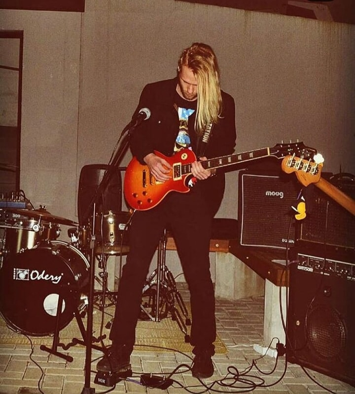
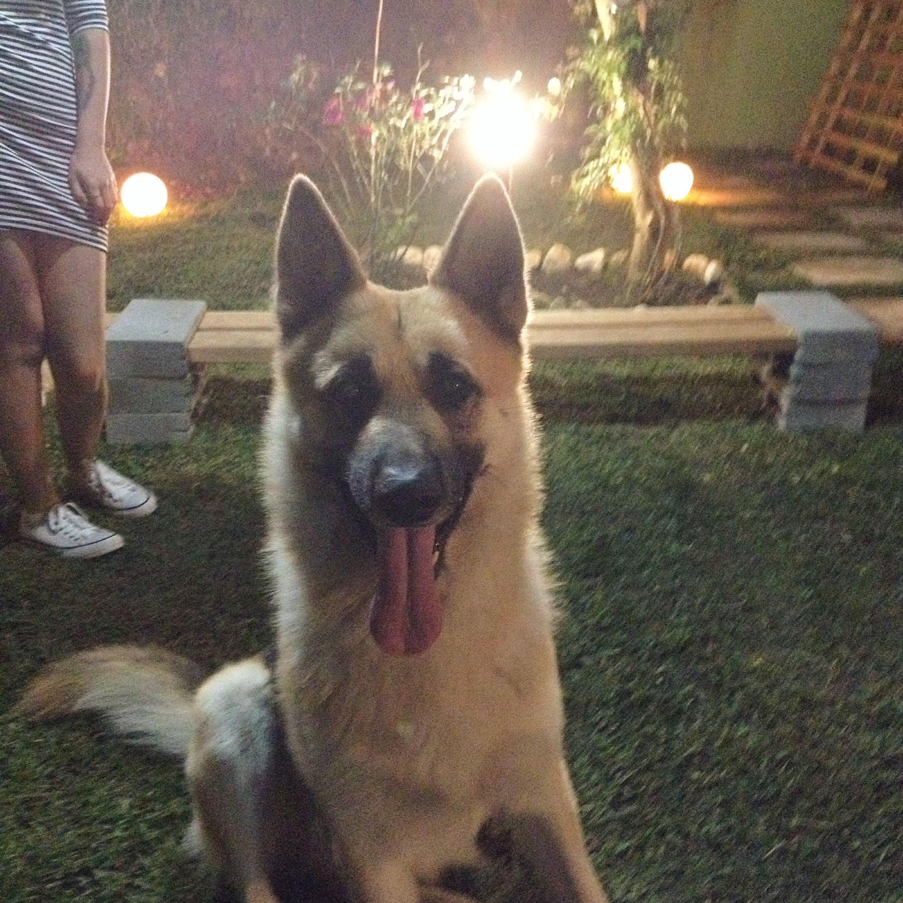
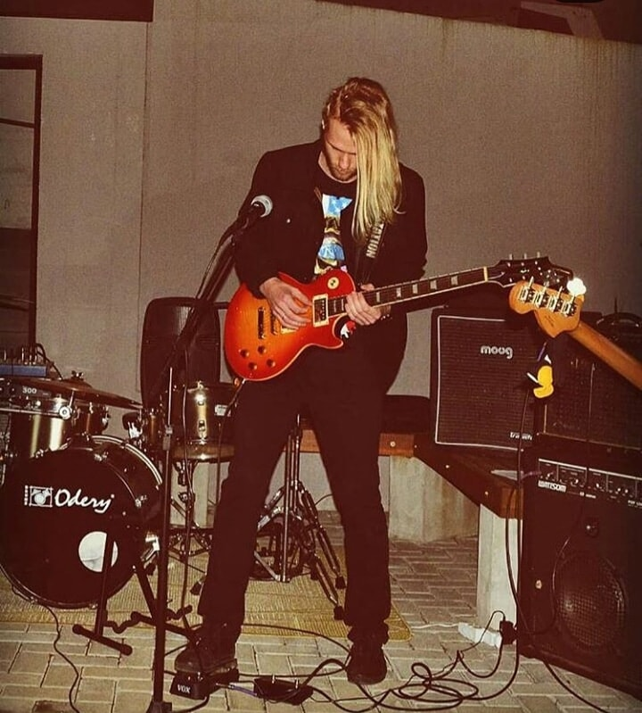
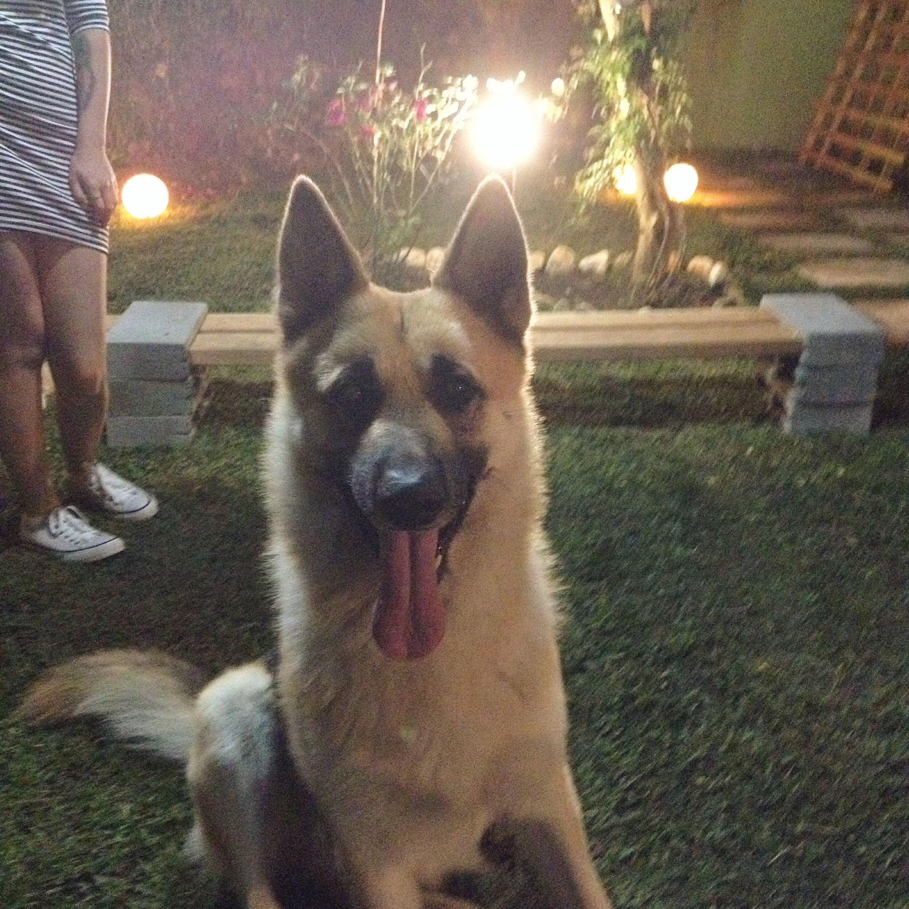
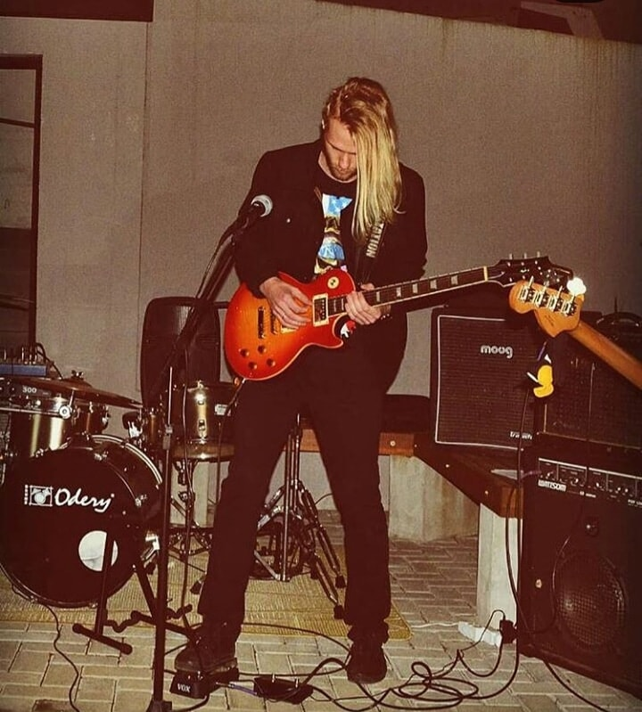
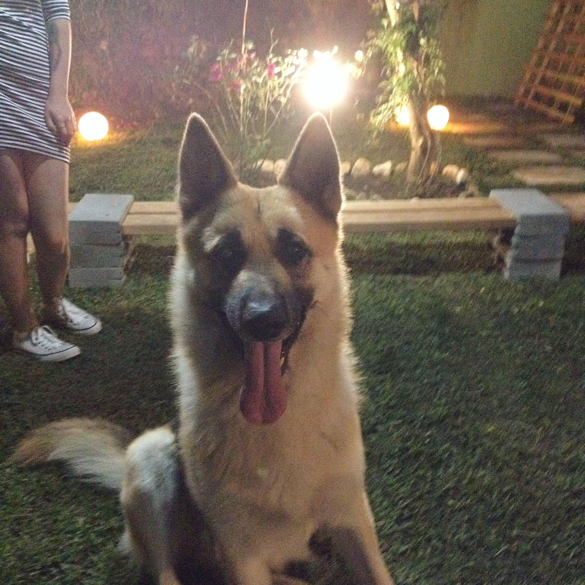

Sobre mim
Meu nome é Vinícius Damas de Lima, tenho 25 anos, moro em Campo Largo e trabalho há 9 anos como faturista no Hospital e Maternidade Parolin.
Hobbies
 



Meu nome é Vinícius Damas de Lima, tenho 25 anos, moro em Campo Largo e trabalho há 9 anos como faturista no Hospital e Maternidade Parolin.

